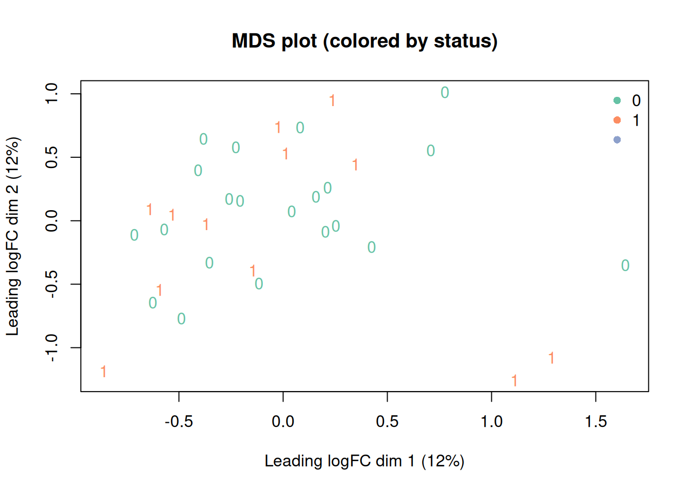
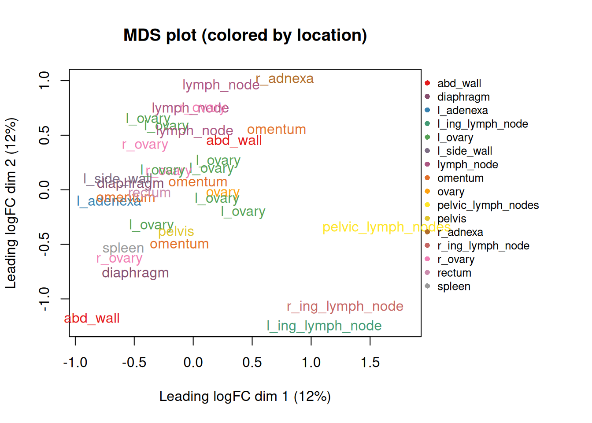

Chapter 8 QC, filtering and identifier mapping - Dataset 2
This chapter performs shared QC steps used by both limma-voom and edgeR and DEseq2.
8.2 Simplify this model
Too many variables in this dataset - reduce the data to just two statuses - 0 or 1
# Create a DGEList (edgeR data container)
dge <- edgeR::DGEList(counts = counts)
# Attach metadata
# (not required, but helpful)
dge$samples <- cbind(dge$samples, meta)
dge$samples## group lib.size norm.factors samples patient status location
## 21020_0_ovary 1 271721.5 1 21020_0_ovary 21020 0 ovary
## 24487_0_l_ovary 1 249346.0 1 24487_0_l_ovary 24487 0 l_ovary
## 24487_1_lymph_node 1 409691.0 1 24487_1_lymph_node 24487 1 lymph_node
## 25258_0_l_ovary 1 152643.4 1 25258_0_l_ovary 25258 0 l_ovary
## 25258_1_diaphragm 1 326043.7 1 25258_1_diaphragm 25258 1 diaphragm
## 29764_0_l_ovary 1 221138.0 1 29764_0_l_ovary 29764 0 l_ovary
## 30961_0_r_ovary 1 239212.0 1 30961_0_r_ovary 30961 0 r_ovary
## 32761_0_l_ovary 1 285745.9 1 32761_0_l_ovary 32761 0 l_ovary
## 37306_0_omentum 1 311885.4 1 37306_0_omentum 37306 0 omentum
## 40729_0_l_ovary 1 323621.3 1 40729_0_l_ovary 40729 0 l_ovary
## 41323_0_omentum 1 241791.8 1 41323_0_omentum 41323 0 omentum
## 45097_0_r_adnexa 1 333289.2 1 45097_0_r_adnexa 45097 0 r_adnexa
## 45097_1_lymph_node 1 356872.5 1 45097_1_lymph_node 45097 1 lymph_node
## 47573_0_l_ovary 1 262786.0 1 47573_0_l_ovary 47573 0 l_ovary
## 47573_1_lymph_node 1 312630.0 1 47573_1_lymph_node 47573 1 lymph_node
## 48986_0_r_ovary 1 264397.8 1 48986_0_r_ovary 48986 0 r_ovary
## 48986_1_abd_wall 1 239510.2 1 48986_1_abd_wall 48986 1 abd_wall
## 16030_0_l_ovary 1 276078.6 1 16030_0_l_ovary 16030 0 l_ovary
## 16030_1_pelvis 1 329090.6 1 16030_1_pelvis 16030 1 pelvis
## 18975_0_l_adenexa 1 120959.6 1 18975_0_l_adenexa 18975 0 l_adenexa
## 21739_0_diaphragm 1 256339.2 1 21739_0_diaphragm 21739 0 diaphragm
## 21739_1_abd_wall 1 326262.6 1 21739_1_abd_wall 21739 1 abd_wall
## 22421_0_r_ovary 1 357151.6 1 22421_0_r_ovary 22421 0 r_ovary
## 22421_0_omentum 1 105110.1 1 22421_0_omentum 22421 0 omentum
## 22421_1_rectum 1 317812.7 1 22421_1_rectum 22421 1 rectum
## 27561_0_omentum 1 171759.7 1 27561_0_omentum 27561 0 omentum
## 27561_1_l_side_wall 1 708898.1 1 27561_1_l_side_wall 27561 1 l_side_wall
## 41245_0_pelvic_lymph_nodes 1 298801.8 1 41245_0_pelvic_lymph_nodes 41245 0 pelvic_lymph_nodes
## 41245_1_r_ing_lymph_node 1 225940.1 1 41245_1_r_ing_lymph_node 41245 1 r_ing_lymph_node
## 41245_1_l_ing_lymph_node 1 217242.8 1 41245_1_l_ing_lymph_node 41245 1 l_ing_lymph_node
## 27481_0_l_ovary 1 703794.9 1 27481_0_l_ovary 27481 0 l_ovary
## 28601_0_r_ovary 1 336277.8 1 28601_0_r_ovary 28601 0 r_ovary
## 28601_1_spleen 1 477668.9 1 28601_1_spleen 28601 1 spleen8.3 Filter lowly expressed genes
We use filterByExpr with the intended design to remove genes with insufficient counts.
design <- model.matrix(~ 0 + status +patient ,
data = meta)
keep <- edgeR::filterByExpr(dge,design,min.count = 3)
dge_f <- dge[keep, , keep.lib.sizes = FALSE]
#if the above is too stringent because of a complicated model desitn
# you can do it manually -
#examples -
#cpm_mat <- edgeR::cpm(dge)
#keep <- rowSums(cpm_mat > 1) >= 2
#dge2 <- dge[keep, , keep.lib.sizes = FALSE]
dim(dge)## [1] 33969 33## [1] 13041 338.4 TMM normalization
## group lib.size norm.factors samples patient status location
## 21020_0_ovary 1 269128.9 1.1183802 21020_0_ovary 21020 0 ovary
## 24487_0_l_ovary 1 246839.7 1.0518445 24487_0_l_ovary 24487 0 l_ovary
## 24487_1_lymph_node 1 408309.5 0.3583386 24487_1_lymph_node 24487 1 lymph_node
## 25258_0_l_ovary 1 151318.5 1.2865219 25258_0_l_ovary 25258 0 l_ovary
## 25258_1_diaphragm 1 323179.2 0.9702009 25258_1_diaphragm 25258 1 diaphragm
## 29764_0_l_ovary 1 218627.9 1.3286774 29764_0_l_ovary 29764 0 l_ovary
## 30961_0_r_ovary 1 237723.3 0.7069949 30961_0_r_ovary 30961 0 r_ovary
## 32761_0_l_ovary 1 283096.9 0.9442838 32761_0_l_ovary 32761 0 l_ovary
## 37306_0_omentum 1 309561.2 0.8729862 37306_0_omentum 37306 0 omentum
## 40729_0_l_ovary 1 321724.7 0.4927415 40729_0_l_ovary 40729 0 l_ovary
## 41323_0_omentum 1 237914.4 1.4782809 41323_0_omentum 41323 0 omentum
## 45097_0_r_adnexa 1 331300.6 0.7585087 45097_0_r_adnexa 45097 0 r_adnexa
## 45097_1_lymph_node 1 355197.8 0.5759449 45097_1_lymph_node 45097 1 lymph_node
## 47573_0_l_ovary 1 261047.3 0.7880946 47573_0_l_ovary 47573 0 l_ovary
## 47573_1_lymph_node 1 310505.9 0.7400617 47573_1_lymph_node 47573 1 lymph_node
## 48986_0_r_ovary 1 262479.3 0.8240803 48986_0_r_ovary 48986 0 r_ovary
## 48986_1_abd_wall 1 237649.8 1.1680124 48986_1_abd_wall 48986 1 abd_wall
## 16030_0_l_ovary 1 272115.4 1.5391628 16030_0_l_ovary 16030 0 l_ovary
## 16030_1_pelvis 1 324798.6 1.3345744 16030_1_pelvis 16030 1 pelvis
## 18975_0_l_adenexa 1 119067.9 1.6171554 18975_0_l_adenexa 18975 0 l_adenexa
## 21739_0_diaphragm 1 252309.9 1.6376094 21739_0_diaphragm 21739 0 diaphragm
## 21739_1_abd_wall 1 320435.1 1.3771110 21739_1_abd_wall 21739 1 abd_wall
## 22421_0_r_ovary 1 354946.3 0.7873107 22421_0_r_ovary 22421 0 r_ovary
## 22421_0_omentum 1 103757.5 1.4081042 22421_0_omentum 22421 0 omentum
## 22421_1_rectum 1 314843.7 1.0694308 22421_1_rectum 22421 1 rectum
## 27561_0_omentum 1 170261.5 1.3270137 27561_0_omentum 27561 0 omentum
## 27561_1_l_side_wall 1 704486.0 0.7503250 27561_1_l_side_wall 27561 1 l_side_wall
## 41245_0_pelvic_lymph_nodes 1 296074.2 1.1194316 41245_0_pelvic_lymph_nodes 41245 0 pelvic_lymph_nodes
## 41245_1_r_ing_lymph_node 1 224107.0 1.2063735 41245_1_r_ing_lymph_node 41245 1 r_ing_lymph_node
## 41245_1_l_ing_lymph_node 1 214869.2 1.3523969 41245_1_l_ing_lymph_node 41245 1 l_ing_lymph_node
## 27481_0_l_ovary 1 700292.1 0.6820421 27481_0_l_ovary 27481 0 l_ovary
## 28601_0_r_ovary 1 331087.3 1.5555166 28601_0_r_ovary 28601 0 r_ovary
## 28601_1_spleen 1 473213.3 0.8018140 28601_1_spleen 28601 1 spleen8.5 Exploratory MDS plot
current_colors <- RColorBrewer::brewer.pal(n = length(unique(meta$status)), "Set2")
names(current_colors) <- levels(factor(meta$status))
plotMDS(dge_f,
labels = meta$status,
col = current_colors[meta$status],
main = "MDS plot (colored by status)"
)
legend("topright",
legend = names(current_colors),
col = current_colors,
pch = 16,
bty = "n"
)
8.6 Exploratory MDS plot - coloured by patient
current_colors_location <- colorRampPalette(RColorBrewer::brewer.pal(9, "Set1"))(length(unique(meta$location)))
names(current_colors_location) <- levels(factor(meta$location))
op <- par(no.readonly = TRUE) # save graphics settings
par(mar = c(5, 4, 4, 10) + 0.1) # increase right margin (last number)
par(xpd = NA) # allow drawing outside plot region
plotMDS(dge_f,
labels = meta$location,
col = current_colors_location[meta$location],
main = "MDS plot (colored by location)"
)
# legend("topright",
# legend = names(current_colors_location),
# col = current_colors_location,
# pch = 16,
# bty = "n"
# )
legend("topright",
inset = c(-0.35, 0), # push legend into the right margin
legend = names(current_colors_location),
col = current_colors_location,
pch = 16,
bty = "n",
cex = 0.8
)
Number of samples by region -
# Count samples per location
meta$location <- as.character(meta$location)
loc_counts <- meta %>%
dplyr::count(location, name = "n")
# Plot
ggplot(loc_counts, aes(x = location, y = n)) +
geom_col(fill = "#2C7FB8", width = 0.75) +
geom_text(aes(label = n), hjust = -0.15, size = 3.8) +
coord_flip() +
scale_y_continuous(expand = expansion(mult = c(0, 0.12))
) +
labs(
title = "Number of samples by location",
x = NULL,
y = "Number of samples"
) +
theme_minimal(base_size = 13) +
theme(
panel.grid.major.y = element_blank(),
plot.title = element_text(face = "bold")
)
look at the different make ups of the data - What are the different locations divided by statuses?
meta2 <- meta %>%
mutate(
status = factor(status, levels = 0:3),
location = factor(location)
)
# totals per status for labeling
tot_status <- meta2 %>% dplyr::count(status, name = "total")
status_broken_into_locations <- ggplot(meta2, aes(x = status, fill = location)) +
geom_bar(color = "white", linewidth = 0.2) + # stacked counts
geom_text(
data = tot_status,
aes(x = status, y = total, label = total),
inherit.aes = FALSE,
vjust = -0.4,
size = 4
) +
labs(
title = "Number of samples by Status (stacked by Location)",
x = "Status",
y = "Number of samples",
fill = "Location"
) + coord_flip() +
theme_minimal(base_size = 13) +
theme(
panel.grid.major.x = element_blank(),
plot.title = element_text(face = "bold")
) +
expand_limits(y = max(tot_status$total) * 1.08)
status_broken_into_locations
What are the different status divided by locations?
meta2$location <- factor(meta$location,
levels = names(sort(table(meta$location),
decreasing = TRUE)))
tot_loc <- meta2 %>% dplyr::count(location, name = "total")
locations_broken_into_statuses <- ggplot(meta2, aes(x = location, fill = status)) +
geom_bar(color = "white", linewidth = 0.2) +
coord_flip() +
geom_text(
data = tot_loc %>% mutate(location = location),
aes(x = location, y = total, label = total),
inherit.aes = FALSE,
hjust = -0.15,
size = 3.8
) +
labs(
title = "Number of samples by Location (stacked by Status)",
x = "Location",
y = "Number of samples",
fill = "Status"
) +
theme_minimal(base_size = 13) +
theme(
panel.grid.major.y = element_blank(),
plot.title = element_text(face = "bold")
) +
expand_limits(y = max(tot_loc$total) * 1.08)
locations_broken_into_statuses